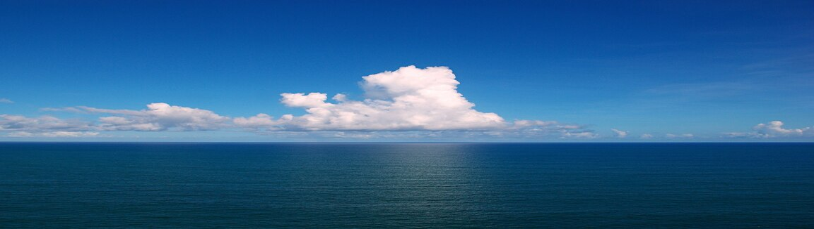

Engineering Disasters in Waterways
Photo Credit: Clouds over the Atlantic Ocean by GPA Photo Archive via Fickr
An overview of the Mount Polley Mine Disaster from The Narwal (https://thenarwhal.ca/topics/mount-polley-mine-disaster/)
On August 4th, 2014 a four square kilometre sized tailings pond full of toxic copper and gold mining waste breached, spilling an estimated 25 billion litres of contaminated materials into Polley Lake, Hazeltine Creek and Quesnel Lake, a source of drinking water and major spawning grounds for sockeye salmon. According to Mount Polley mine records filed with Environment Canada in 2013, there were “326 tonnes of nickel, over 400 tonnes of arsenic, 177 tonnes of lead and 18,400 tonnes of copper and its compounds placed in the tailings pond,” in 2012.
Following the Mount Polley mine disaster, a local state of emergency was declared for the Cariboo Regional District over drinking water contamination concerns.
Clean up efforts have led to a reconstructed Hazeltine Creek, although the contaminated slurry that made its way into Polley Lake and Quesnel Lake remains in the waterways. A drinking water ban was lifted within weeks of the spill and regular water testing is being conducted by the B.C. government, the Mount Polley mine, the University of Northern British Columbia and local residents.
An investigation into the cause of the spill revealed mine engineers failed to account for glacial silt underneath the tailings containment pond, leading to structural insufficiencies that caused the dam’s collapse. No charges or fines have been laid in response to the disaster. Several local landowners and business operators affected by the spill have launched legal challenges to seek compensation for damages.
The Mount Polley mine is an open pit gold and copper mine in operation since 1997 and is owned by Imperial Metals.